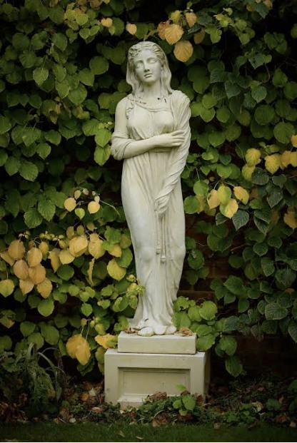

Copy the statue

Standing Woman
Stand upright and fold your arms across your body.
Copy the statue and hold your pose briefly to earn points.
Statue 1 of 3Score: 0
GREEN LIGHT
Move into the pose.
POSE TIMER5seconds until red light
Loading pose detection. Please wait.
Statues
The camera needs to see your shoulders and wrists. Roughly match the pose shown. Hold it briefly to earn 10 points and automatically move to the next statue.